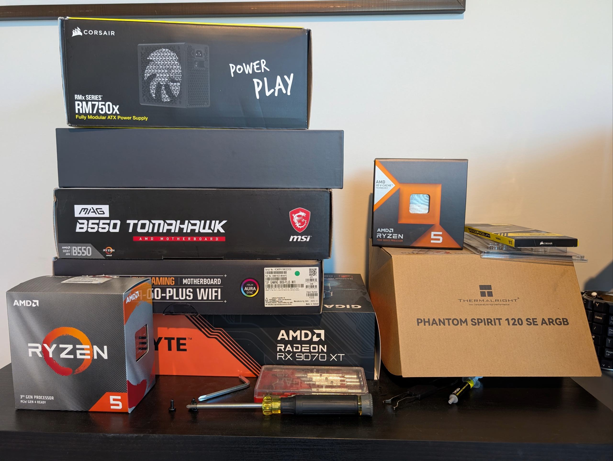
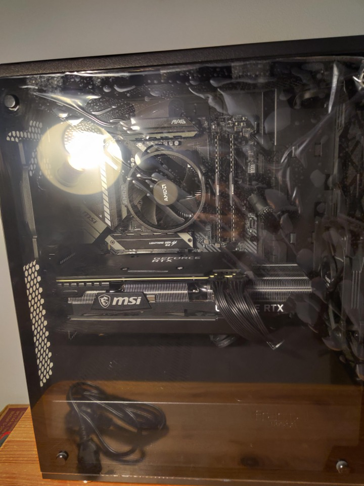
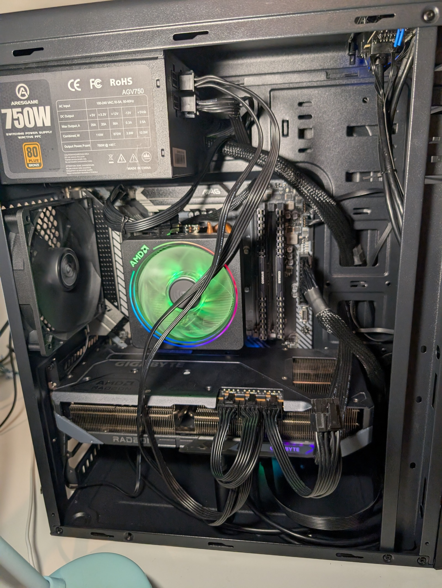
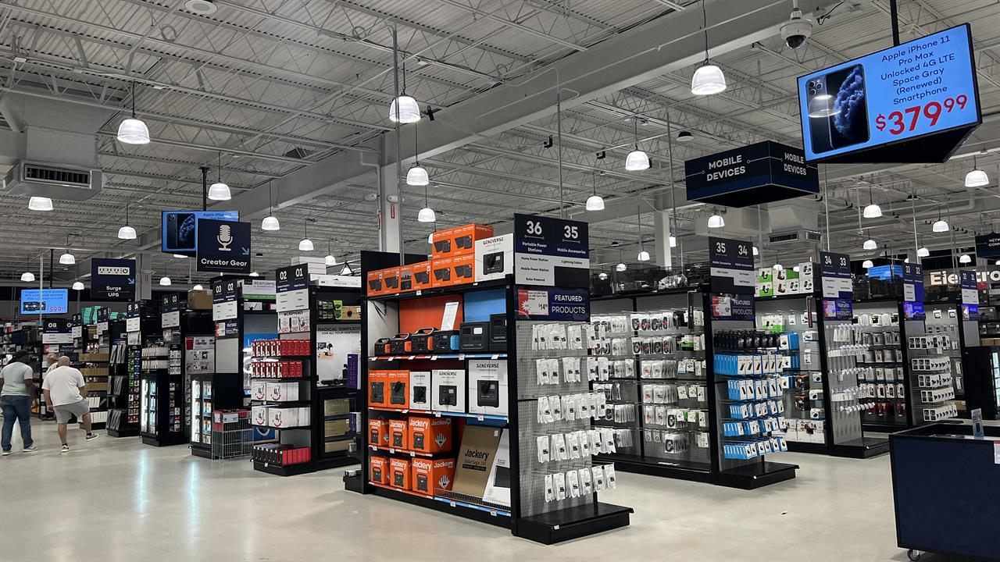
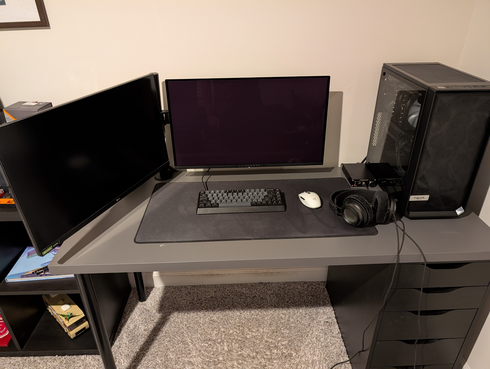
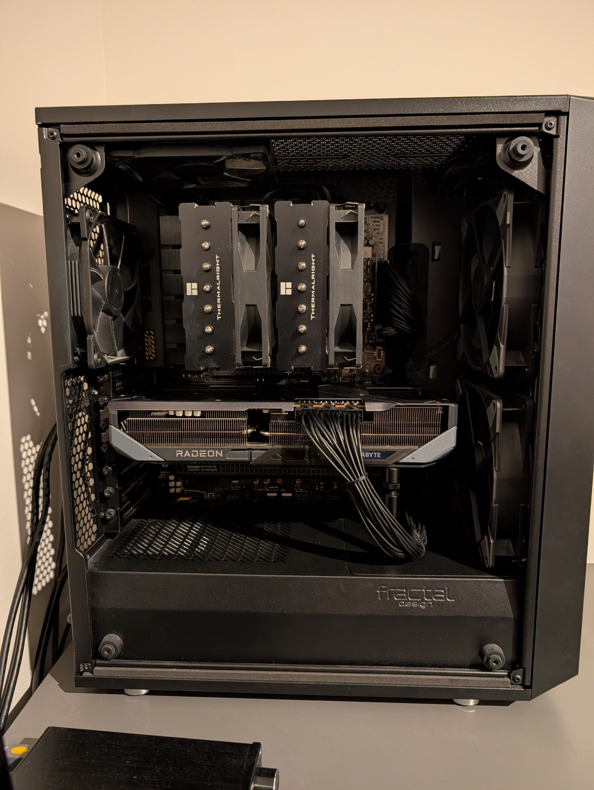
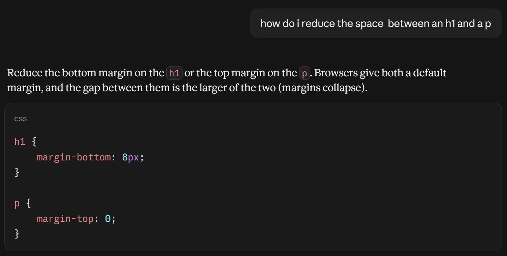

What
Everyone is familiar with computers, but not many people outside of computer specific disciplines are aware that you could build your own. This hobby is about picking out the specific hardware for your computer and putting it all together.
Many people might wonder what the point of this is when you could just buy a pre assembled computer, but to me it's about the fufilling feeling of knowing that my computer is entirely my own made to the specifications that I require.
Building a computer is a lot easier than it sounds. It's kind of like making an adult lego set. It only requires a screw driver and knowing how to screw and plug in cables. These are the components you need:
- Motherboard
- CPU
- RAM
- GPU
- Storage (SSD or HDD)
- Power Supply
- Case
Once you've gathered all the components, you can start building your computer.

Source: This photo is my own, and not AI-generated.
Who
When I was a kid, in the 7th grade, my friend introduced me to the idea of building my own computer. I was 13 years old and this blew my mind.
Ever since then I've been fascinated with computer hardware and it's what led me to computer science as my major. In 2020 my dad bought me the parts to my first computer, and I've been upgrading that same computer for 6 years as well as having built other computers.

Source: This photo is my own, and not AI-generated.
When
You can build a computer whenever you have the time and resources to do so, it's not really bound by a specific time or place.
There are certain times that are better to buy parts, however. Things like inflation and tariffs influence the prices of parts, and right now specifically, the rise in AI and datacenters means most of the ram and storage being produced is being bought up for AI and datacenter applications. This has driven the price of RAM and storage up by 5 times what it used to cost only a few years ago.
Finding a clean workspace is also important for building a computer. It's best to find a large table or surface thats well lit and away from carpets that build up static electricity which can (although extremely rarely) damage sensitive components.

Source: This photo is my own, and not AI-generated.
Where
Sourcing your components is half the fun. There are plenty of places to buy computer parts, from online retailers to local electronics stores.
| Retailer | Best For | Ideal Parts to Buy | Return Window |
|---|---|---|---|
| Amazon | Fast Shipping & Logistics | Storage (SSDs), RAM, Cooling | 30 Days |
| Newegg | Enthusiast Selection & Bundles | CPU + Motherboard + RAM Bundles | 30 Days |
| Micro Center | In-Store Bundles & Expert Help | CPUs, Motherboards, PC Cases | 15 Days (Major Components) |
| B&H Photo Video | No Tax Options & Safe Shipping | CPUs, PSUs, Graphics Cards | 30 Days |
| Best Buy | Mainstream Graphics Cards & Pickups | Nvidia GPUs, Prebuilts, Monitors | 14 Days (Standard Members) |

Source: This is a stock image.
How
Building a custom PC can seem daunting, but with the right approach, it's a rewarding experience. Here's a step-by-step guide to help you get started:
- Plan Your Build: Determine the purpose of your PC and set a budget.
- Research Components: Understand the roles of each part and research compatible options.
- Make a List: Create a list of all the components you need.
- Find Deals: Compare prices across different retailers.
- Assemble Your PC: Follow a reliable guide to put everything together.

Source: This photo is my own, and not AI-generated.
Why
So why do all this? Why go through the trouble of building a custom PC when you could just buy a prebuilt one?
For me, it's about the satisfaction of creating something unique and the knowledge that every component is chosen with a specific purpose in mind.

Source: This photo is my own, and not AI-generated.
AI Prompts
I used AI prompts to help me implement the specific HTML and CSS features I wanted for this site. Other than for that, all the images are my own or stock images and not AI generated. Here are some of the prompts I used:
- "Make a CSS/JS script that makes it so only the selected section is visible at a time (like a single-page app)."
- "How do I make an HTML table with horizontal lines that divide the rows"
- "How do I make a link look like a button?"
- "How do I apply a gradient as a background color?"
- "Make a thin border around an image with rounded edges and padding"

Source: This photo is my own, and not AI-generated.